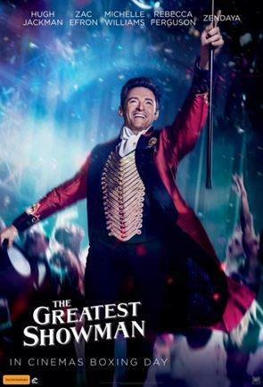

<section class="article-disney-plus py-5">
  <div class="container">
    <div class="row justify-content-center">
      <article class="col-sm-8">
        <h2>The greatest showman</h2>
        <h5>Quand le rêve devient réalité…, 31 janvier 2021</h5>
        <p>
          Quand le rêve devient réalité…
        </p>
        <br>

        <div class="article_img">
          
        </div>

        <br>

          <p>
            <strong class="emphase">De quoi ça parle :</strong> Le film inspiré par l’histoire de P.T Barnum raconte la naissance du show-business et l’histoire d’un homme parti de rien qui créé un spectacle qui deviendra un phénomène planétaire.
          </p>
          <br>
          <p>
            <strong class="emphase">Mon avis :</strong> Le casting est haut en couleur et porte ce film d’une façon magistrale. On y retrouve notamment Hugh Jackman, Zac Efron, Michèle Williams et Zendaya. Le duo Zac Efron/Hugh Jackman est surprenant et incroyable.
            <br>
            La réalisation est top et dès le début on sait que le film veut vous offrir du spectacle et de l’émerveillement. Les musiques vous feront chanter, les chorégraphies vous donneront envie de danser et le tout vous fera rêver.
            <br>
            Mais au-delà du spectacle, ce long métrage est aussi une critique de la société du 19ème siècle et met l’accent sur le contraste de la haute et basse société.
            <br>
            En conclusion, je dirai que c’est un film qui fait du bien au moral et qui donne la pêche.
          </p>

          <br>
          <p>
            <strong class="emphase">Anecdote :</strong> Bien que le film soit inspiré de l’histoire de P.T Barnum et que le personnage principal en porte le nom, il ne s’agit pas d’un biopic.
            <br>
	          L’idée de « The greatest showman » s’est installée dans l’esprit de Laurence Mark (producteur) et de Bill Candon (scénariste) alors qu’ils préparaient la cérémonie des Oscars 2018 présentée cette année là par Hugh Jackman.
          </p>

        <br>

        <iframe width="560" height="315" src="https://www.youtube.com/embed/KupmG0HxQ6w" title="YouTube video player" frameborder="0" allow="accelerometer; autoplay; clipboard-write; encrypted-media; gyroscope; picture-in-picture" allowfullscreen></iframe>

        <br>

        <p class="signature text-end"><strong>Angèle</strong></p>
      </article>
    </div>
  </div>
</section>


